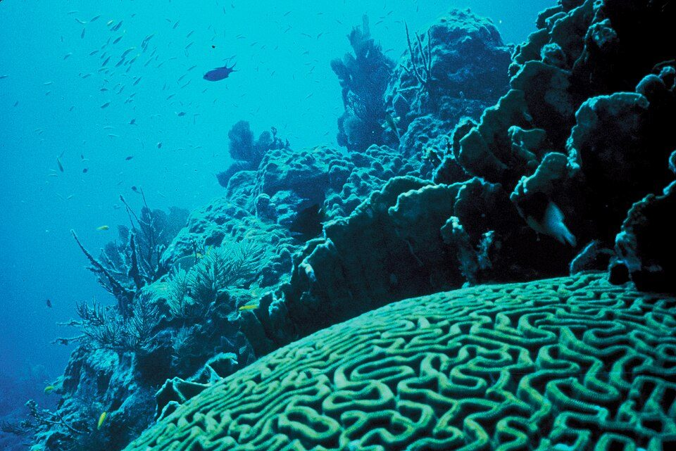
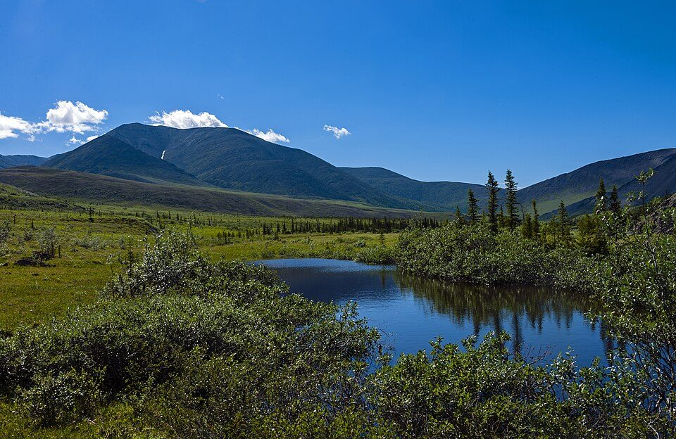

Planet Earth · 7 articles
Life and ecosystems
How life began, how it evolves, the planet's astonishing biodiversity, its great ecosystems and the extinctions that changed everything.
The Earth is the only place in the universe where we know for certain that life exists. It has been here for more than 3.5 billion years, has survived ice ages, asteroids and volcanoes, and has filled every corner of the planet, from the seabed to icy summits.
 The origin of lifeFrom molecules to cells: the clues to how life arose on Earth more than 3.5 billion years ago, and the organisms that thrive in extreme conditions.
The origin of lifeFrom molecules to cells: the clues to how life arose on Earth more than 3.5 billion years ago, and the organisms that thrive in extreme conditions. EvolutionDarwin, natural selection and DNA: how living things change over time, from dinosaurs to birds and from the first hominins to Atapuerca.
EvolutionDarwin, natural selection and DNA: how living things change over time, from dinosaurs to birds and from the first hominins to Atapuerca. BiodiversityMillions of species, most still unnamed: what biodiversity is, where it is concentrated and why Spain is one of Europe's richest countries.
BiodiversityMillions of species, most still unnamed: what biodiversity is, where it is concentrated and why Spain is one of Europe's richest countries.- Forests and rainforestsThree trillion trees: the Amazon, the taiga, giant redwoods and Spain's forests, from the dehesa to the laurel forest.

Reefs and marine lifeCoral reefs, seagrass meadows and the giants of the sea: the life that fills the oceans and the threats it faces.
Biomes: from savanna to iceSavannas, grasslands, tundra and poles: the planet's great ecosystems and the animals that have learned to live at the extremes. The great extinctionsFive times life came close to vanishing. The dinosaur-killing asteroid, the Great Dying and the sixth extinction now under way.
The great extinctionsFive times life came close to vanishing. The dinosaur-killing asteroid, the Great Dying and the sixth extinction now under way.